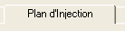
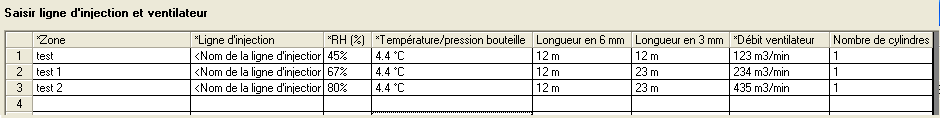
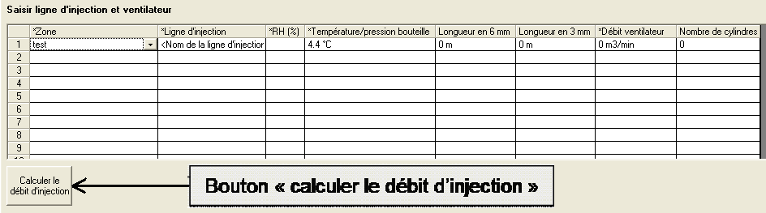
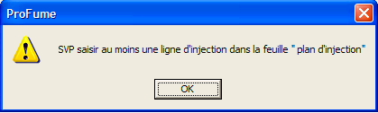
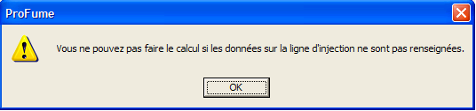
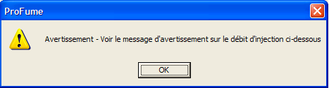
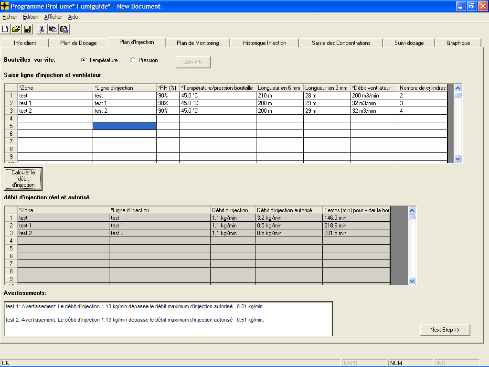

Onglet Plan d'injection
Après avoir calculé la quantité de ProFume nécessaire dans l'onglet Plan de dosage, vous pouvez planifier l'injection du fumigant. Plan d'injection est le troisième onglet du Fumiguide ProFume et il est utilisé pour saisir les lignes d'injection, les ventilateurs et calculer les débits d'injection réels et autorisés pour diverses zones d'une enceinte ainsi que le temps nécessaire à vider la (les) bouteille(s).

L'objectif du Plan d'injection est
d'éviter une formation de brouillard dans l'espace fumigé. Une formation de brouillard est la condensation d'humidité à l'intérieur d'une enceinte fumigée, qui se produit quand la température de l'air atteint le point de rosée. Les méthodes permettant d'éviter un formation de brouillard incluent : (1) utiliser un diamètre intérieur et une longueur appropriés pour la ligne d'injection, et (2) utiliser des ventilateurs adaptés avec un débit suffisant pour mélanger efficacement l'air à l'intérieur de l'enceinte avec l'air plus frais chargé en ProFume.
Aucun gaz
supplémentaire ne sera utilisé pour pressuriser le cylindre. Chaque cylindre
plein contient 56,7 Kg de produit sous une pression d'environ 15 à 20 bars. Consultez le tableau ci-dessous pour une plage de pressions à diverses températures.
Pression du cylindre de fumigant ProFume à
diverses températures
| Température |
Pression |
| oC |
kPa |
Bars |
| -17.8 |
490 |
4.9 |
| -12.2 |
594 |
5.9 |
| -6.7 |
710 |
7.1 |
| -1.1 |
849 |
8.5 |
| 4.4 |
1000 |
10.0 |
| 10.0 |
1173 |
11.7 |
| 15.6 |
1366 |
13.7 |
| 21.1 |
1580 |
158 |
| 26.7 |
1822 |
18.2 |
| 32.2 |
2090 |
20.9 |
| 37.8 |
2386 |
23.8 |
| 43.3 |
2712 |
27.1 |
| 48.9 |
3072 |
30.7 |
| 54.4 |
3469 |
34.7 |
| 60.0 |
3906 |
39.0 |
| 65.6 |
4389 |
43.9 |

Sélectionner soit la temperature, soit la pression de la bouteille afin de calculer le temps (minutes) pour vider la (les) bouteille(s) reliée à une ligne d'injection particulière.
Après avoir sélectionné la température ou la pression, vous devez sélectionner le bouton “Convertir”. Si la température ou la pression n'a pas été calculée, le message d'avertissement suivant aparaîtra. Cette conversion doit être faite impérativement pour que l'utilisateur puisse continuer à saisir les autres informations de l'onglet Plan d'injection.

Les zones
saisies dans l'onglet Plan de dosage seront disponibles sous la colonne Nom de zone en tant qu'options dans un menu déroulant. Sélectionnez la ou les zones où seront placées des lignes et des ventilateurs d'injection.

Lorsque chaque zone
est sélectionnée dans cet onglet, des noms de ligne d'injection, une humidité relative, une température et une pression des bouteilles, des valeurs de ligne et de ventilateur d'injection s'afficheront par défaut dans le tableau automatiquement. Sélectionnez et saisissez tout changement de nom de ligne d'injection souhaité. Suggestion : Utilisez des termes descriptifs pour permettre l'identification aisée lors de la saisie de données dans l'onglet Saisie des concentrations.

Vous devez saisir l'humidité relative, la température et la pression des bouteilles, les longueurs de tuyau (diamètre 3 mm, 6 mm ou les deux) et la capacité des ventilateurs avant d'appuyer sur le bouton Calculer Débit d'injections. :
Ligne
d'injection est le tube par lequel le fumigant est émis à l'extérieur de l'enceinte ou de la chambre dans la zone fumigée. La plage valide est de 8-152 m.
Humidité relative (HR) est le
pourcentage d'eau présente dans l'air par rapport à la quantité qu'il peut contenir à 100% de saturation.
Température bouteille est la température des bouteilles. Cette température est estimée par la température de l'air si les cylindres ne sont pas exposés à l'ensoleillement direct et ont eu le temps de s'équilibrer par rapport à la température ambiante. La plage de températures valide est de 4.4°C - 65.6°C (40°F - 150° F). .
Pression de la bouteille est la pression de la bouteille qui peut être lue directement grâce à un manomètre inclus dans le dispositif d'injection.
Longueur en 6 mm est la longueur de ligne d'injection d'un diamètre interne de 6 mm.
Longueur en 3 mm est la longueur de ligne d'injection d'un diamètre interne de 3 mm.
Débit ventilateur est la sortie de flux d'air maximal d'un ventilateur.
Nombre de bouteilles correspond au nombre de bouteilles reliées à une unique ligne d'injection
Lorsque ces valeurs sont saisies, appuyer sur le bouton “Calculer le débit d'injection ».Le Fumiguide ProFume fournira en bas du tableau le débit réel et le débit autorisé par ligne d'injection ainsi que le temps nécessaire au vidage de chaque bouteille attachée à chaque ligne. Ces termes sont définis comme étant:
Débit d'injection est le nombre de Kg par
minute de fumigant émis dans la zone fumigée en présumant une température de
cylindre, un diamètre intérieur et une longueur de ligne d'injection.
Débit d'injection autorisée est le débit maximal d'injection
de fumigant autorisé pour éviter les conditions d’une formation de brouillard
dans l'espace fumigé.

Étape suivante est le bouton dans le coin inférieur droit de l'onglet, qui passe le fumigateur à l'onglet suivant du programme.
Messages d'avertissement dans l'onglet Plan d'injection
Si vous saisissez un texte ou une valeur en dehors des plages acceptables référencées auparavant, une boîte de message d'avertissement telle que celle-ci s'affiche :


Vous devez saisir une ligne
d'injection dans cet onglet, sinon, des messages d'avertissement s'affichent, tels que les deux suivants. De plus, vous ne pourrez saisir de mesures de concentrations pour ce fichier.


Une boîte de message d'avertissement s'affiche si le
débit d’injection réel dépasse le débit d’injection autorisé.

Message d'avertissement quand
les dimensions des ligne d'injection (diamètre intérieur et
longueur) entraînent un débit d’injection qui dépasse le débit d'injection
autorisé en fonction de la capacité des ventilateurs.

Quand le débit d'injection dépasse le débit d'injection autorisé, un message d'avertissement apparaîtra indiquant que vous dépassez le débit d'injection recommandé.L'utilisateur doit valider ce message d'avertissement avant de passer à l'étape suivante. La dose d'injection peut être maîtrisée en accroissant le débit des ventilateurs, en accroissant la longueur des lignes, en diminuant le diamètre intérieur ou une combinaison de tous ces facteurs.